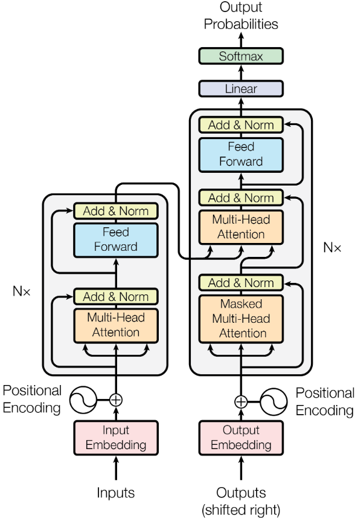

Attention发展历程: https://www.cnblogs.com/robert-dlut/p/5952032.html
Attention Is All You Need: https://arxiv.org/pdf/1706.03762.pdf
illustrated-transformer: http://jalammar.github.io/illustrated-transformer/
Transformer

Transformer具有一个Encoder-Decoder的结构，文章中说这也是目前（2017年）神经序列转导模型的主流结构。
Positional Encoding
对每个token的embedding向量，维度为$1\times d_\text{model}$，将该token在句中的位置记作$pos$，则对向量中的第$i$个元素，其Positional Encoding记为$PE$，公式如下：
$$
PE(pos,2i) = sin(pos/10000^{2i/d_\text{model}})\\
PE(pos,2i+1) = cos(pos/10000^{2i/d_\text{model}})
$$
将$PE$和embedding向量相加，就完成了Positional Encoding。
Encoder
Encoder包含6个相同的编码层
Encoder Layer
假设$n$个token经过embedding，并加入了位置信息（Positional Encoding）之后，记作矩阵$X$，维度为$n\times d_\text{X}$。$X$首先进入Multi-Head Attention层。
Multi-Head Attention
对普通的Self-Attention，首先初始化三个可训练的、大小为$d_\text{X} \times d_{\text{model}}$的权重矩阵$W^Q,W^K,W^V$。由矩阵乘积$X \times W$分别得到$Q,K,V$三个矩阵，大小为$n\times d_\text{model}$。从而根据如下公式计算输出： $$ \text{Attention}(Q,K,V) = \text{softmax}(\frac{QK^T}{\sqrt{d_\text{model}}})V $$ 最终输出尺寸为$ n\times d_\text{model}$。若不使用矩阵形式表示，普通Self-Attention相当于对每个token的$q$，计算与其他token的$k$向量的点积，softmax归一化之后作为该token的权重，最后将所有token的向量加权平均作为输出。
Multi-Head Attention相当于使用数个不同的权重矩阵$W_i$，并行计算Self-Attention，最后将计算结果横向拼接。
假设共有$8$个这样并行的Self-Attention层，若每一层Self-Attention的权重矩阵大小为$d_\text{X} \times d_\text{v}$，则输出尺寸为$n\times 8d_v$。论文中取$d_v=d_{model}/8$，从而在学习更多信息的前提下，使运算量与普通Self-Attention类似。
对拼接后的结果$x_c$，乘上额外的参数矩阵$W^O$，最终得到输出尺寸为$ n\times d_\text{model}$，其中$W^O$尺寸为$8d_v\times d_\text{model}$。
得到了该层的输出后，和残差网络类似的，论文使用了残差连接（residual connection）的方法连接两层，即将原始输入和该层输出直接相加，之后再对此应用Layer Normalization，传入下一层。公式表达如下： $$ \text{LayerNorm}(x+\text{Sublayer}(x)) $$
Position-wise Feed-Forward Networks
Multi-Head Attention层后紧跟两个全连接层。其中第一个全连接层的神经元数量$d_{ff}=2048$，激活函数为ReLU，第二层的神经元数量为$d_\text{model}$。公式表达如下： $$ \text{FFN} = \max(0,xW_1+b_1)W_2+b_2 $$ 对不同位置的token，全连接层的参数是共享的。**论文说这类似于两个卷积核尺寸为$1\times1$的卷积层，这样的卷积层和全连接层可以相互转换，并且根据卷积核维度随意调节输出维度。要注意的是，该前馈网络的对象是每个token的向量，而非整句话。**
最后对结果应用残差链接和层标准化，即： $$ \text{LayerNorm}(x+\text{Sublayer}(x)) $$
Decoder
Decoder同样由6个相同的Decoder Layer组成。和Encoder不同的是，每个Decoder Layer都在第一层Multi-Head Attention之前加入了一个将之前输出结果作为输入的Masked Multi-Head Attention。该层输出结果和原始输入（总模型输出结果）进行Add&Norm之后，和Encoder的输出一同输入Multi-Head Attention层。
Masked Multi-Head Attention
需要注意，Transformer 仍属于 Seq2Seq 模型，尽管 Encoder 部分可以并行的生成输入表示，Decoder 部分仍需要以自回归的方式逐词生成输出序列。自然的，在按照该方式生成输出序列时，Decoder 只能从当前词前面的词中获取信息（使后面序列的 Attention 值为0），因此需要加入 Mask（掩码）。
具体方式是在相关性系数矩阵上累加一个 Mask 矩阵。该矩阵在需要 Mask 的位置的值为 -inf（具体实现时是一个非常小的数，比如 1e-9），其余位置为 0，这样在进行了 Softmax 归一化操作之后，被掩码掉的位置计算得到的权重便近似为 0。
修改后的矩阵化公式为： $$ \text{Attention}(Q,K,V) = \text{softmax}(\frac{QK^T}{\sqrt{d_\text{model}}}+Mask)V $$
Linear+Softmax
经过了Encoder和Decoder的运算，最后的结果将由Linear层转换为维度为$1\times d_\text{vocab}$的向量，然后经过Softmax函数将其转换为概率，从而找到概率最高的单词作为下一个输出（argmax）